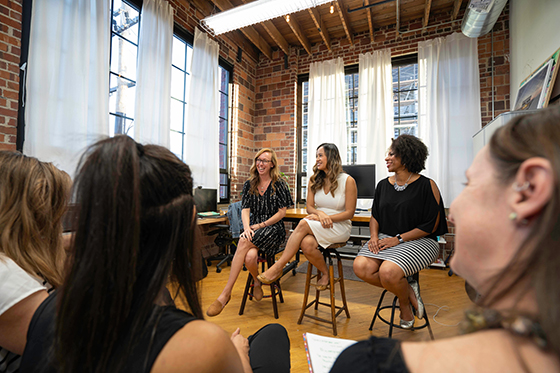

Our support services
Whether you’re facing health, personal, domestic, or other issues, the Women’s Center of Jacksonville offers a variety of programs to help you manage the tough times. From our Bosom Buddies program offering support and education to breast cancer survivors to our Expanded Horizons education program preparing women for their GED or teaching them English as a Second Language, we strive to help you achieve your dreams through our support services.
Our counseling program features a flexible fee structure to accommodate individual financial needs for those who meet eligibility requirements. The professional staff includes licensed mental health counselors.
